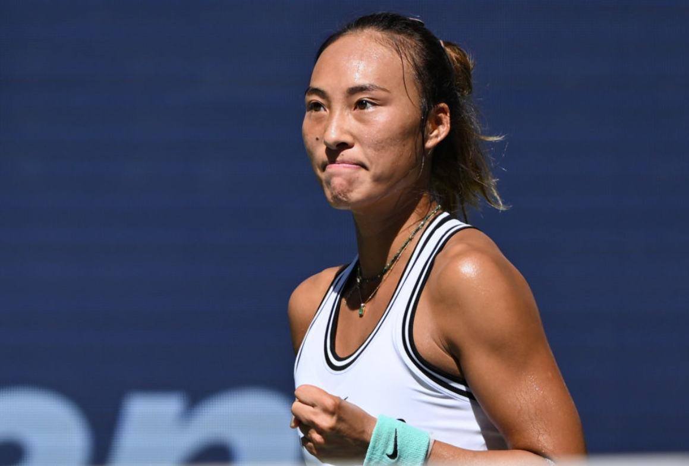

10日凌晨，中国球员郑钦文在2026年美国网球公开赛女单四分之一决赛中， 以6:3、1:6、4:6不敌莱巴金娜，无缘四强。
当日下午，郑钦文在个人社交媒体发文称，保持赤诚，梦想不退场， 并在“下一站”后配上了五星红旗和爱心。
两天前，中国网球公开赛官方发布消息称， 郑钦文确认参加2026年中国网球公开赛正赛。 这将是郑钦文连续第四年出战中网， 她曾在2024年闯入女单四强，创造个人中网最佳战绩。
9月9日，郑钦文在比赛中拿下第一盘盘点后庆祝。

本届美网，郑钦文逐渐找回比赛状态，从资格赛一路闯入八强。 “年初的时候，我完全不在状态，找不到比赛节奏， 这次美网帮助我一点一点地找回状态。”郑钦文赛后说， “我觉得网球一直在教会我，只要比赛还没结束，就必须坚持战斗， 因为你永远不知道下一局比赛会发生什么。”
中国网球协会在10日致郑钦文的贺电中表示： “赛事期间，你展现出超强的竞技韧性与翻盘能力， 连续两次上演‘让五追七’的惊艳奇迹，成功挺进美网八强。 凭借本次大赛的卓越表现，你的世界排名从121位大幅攀升至52位， 实现了个人职业生涯中从伤病、失败、被质疑到再次回归、上升的跨越式突破， 用实打实的战绩证明了自身实力。”